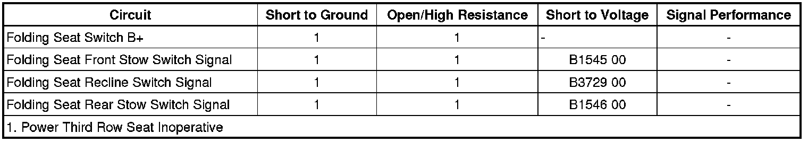

B3729
DTC B1545, B1546, or B3729
Diagnostic Instructions
* Perform the Diagnostic System Check - Vehicle (Initial Inspection and Diagnostic Overview) prior to using this diagnostic procedure.
* Review Strategy Based Diagnosis (Initial Inspection and Diagnostic Overview) for an overview of the diagnostic approach.
* Diagnostic Procedure Instructions (Initial Inspection and Diagnostic Overview)provides an overview of each diagnostic category.
DTC Descriptors
DTC B1545 00
- Seat Stow Switch 1 Circuit
DTC B1546 00
- Seat Stow Switch 2 Circuit
DTC B3729 00
- Seat Recline Control Switch
Diagnostic Fault Information

Circuit/System Description
When the rear folding seat stow or recline switches are pressed they send a 12-volt signal through the switch signal circuit to the rear seat module (RSM). The RSM then commands the rear folding seat to move in response to the switch inputs.
Conditions for Running the DTC
* DTC B1327 must not be present.
* Battery voltage must be between 9-16 volts.
Conditions for Setting the DTC
If a switch input continues to be active for a period of time after motion in the requested direction has ceased, the switch under test will be considered shorted.
Action Taken When the DTC Sets
* A motor output driven in response to a switch considered failed, is deactivated for both directions.
* The RSM will respond to any other switch signal that has not set a DTC.
Conditions for Clearing the DTC
The DTC automatically clears when the switch circuit setting the DTC is no longer active.
Reference Information
Schematic Reference
Rear Seat Schematics (Rear Seat Schematics)
Connector End View Reference
Component Connector End Views (Connector Views)
Description and Operation
Power Seats System Description and Operation (Folding Seat) (Power Seats System Description and Operation (Folding Seat))Power Seats System Description and Operation (Front Seat) (Power Seats System Description and Operation (Front Seat))
Electrical Information Reference
* Circuit Testing (Component Tests and General Diagnostics)
* Connector Repairs (Component Tests and General Diagnostics)
* Testing for Intermittent Conditions and Poor Connections (Component Tests and General Diagnostics)
* Wiring Repairs (Component Tests and General Diagnostics)
Scan Tool Reference
Control Module References (Programming and Relearning)
Circuit/System Verification
Ignition ON, observe the following scan tool parameters while pressing the related folding seat switch. The reading should change between INACTIVE and ACTIVE.
* Front Stow Switch
* Rear Stow Switch
* Recline Switch
Circuit/System Testing
1. Ignition OFF, disconnect the harness connector at the appropriate folding seat stow or recline switch.
2. Ignition ON, verify the scan tool stow and recline switch parameters are INACTIVE.
• If not the specified value, test the appropriate signal circuit for a short to voltage. If the circuit tests normal, replace the RSM.
3. If all circuits test normal, test or replace the folding seat stow switch.
Component Testing
1. Ignition OFF, disconnect the harness connector at the folding seat stow switch.
2. Test for infinite resistance between signal terminal C and the B+ terminal A with the switch in the open position.
• If less than the specified value, replace the switch.
3. Test for less than 1 ohm of resistance between signal terminal C and the B+ terminal A with the switch in the closed position.
• If greater than the specified value, replace the folding seat stow switch.
Repair Instructions
Important: After performing this diagnostic test and electrical or component repairs have been completed, the folding seat may be in an unknown state and out of calibration with the RSM. The RSM must be calibrated before the folding seat system will operate. Refer to Power Folding Seat Calibration (Programming and Relearning) .
Perform the Diagnostic Repair Verification (Verification Tests) after completing the diagnostic procedure.
* Rear Seat Number 2 Folding Actuator Switch Replacement - Rear Quarter Trim Front (Rear Seat Number 2 Folding Actuator Switch Replacement - Rear Quarter Trim Front)
* Rear Seat Number 2 Folding Actuator Switch Replacement - Rear Quarter Trim Rear (Rear Seat Number 2 Folding Actuator Switch Replacement - Rear Quarter Trim Rear)
* Control Module References (Programming and Relearning)for RSM replacement, setup, and programming